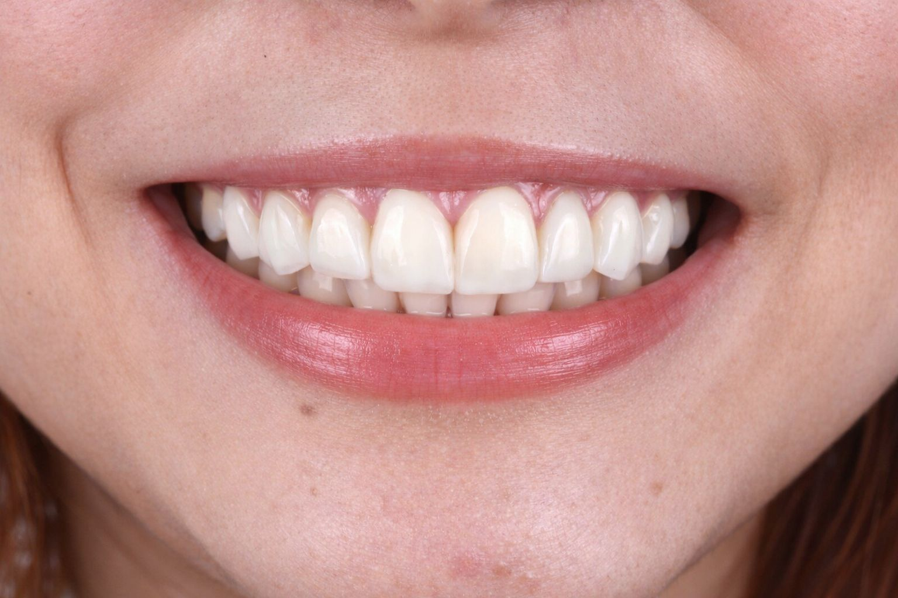
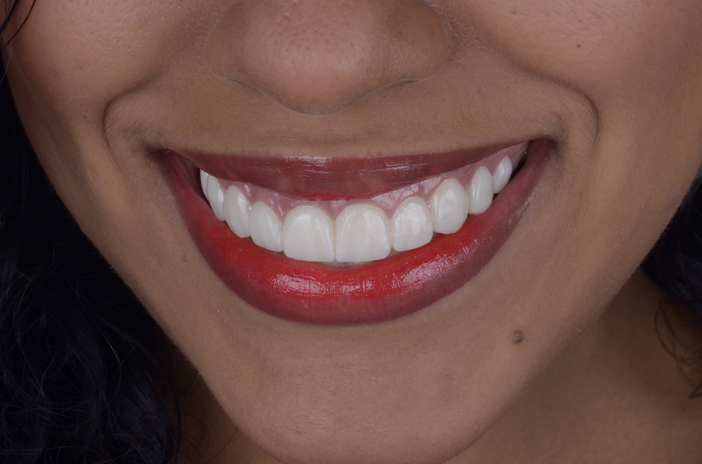
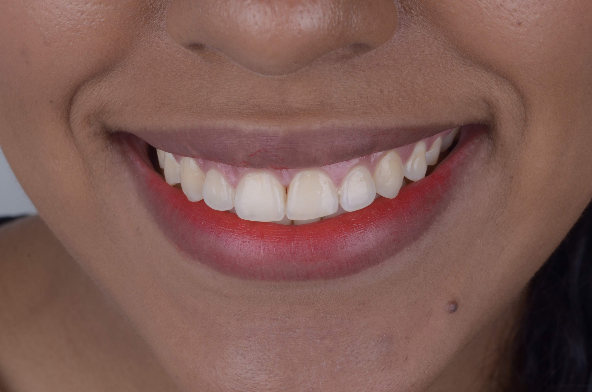
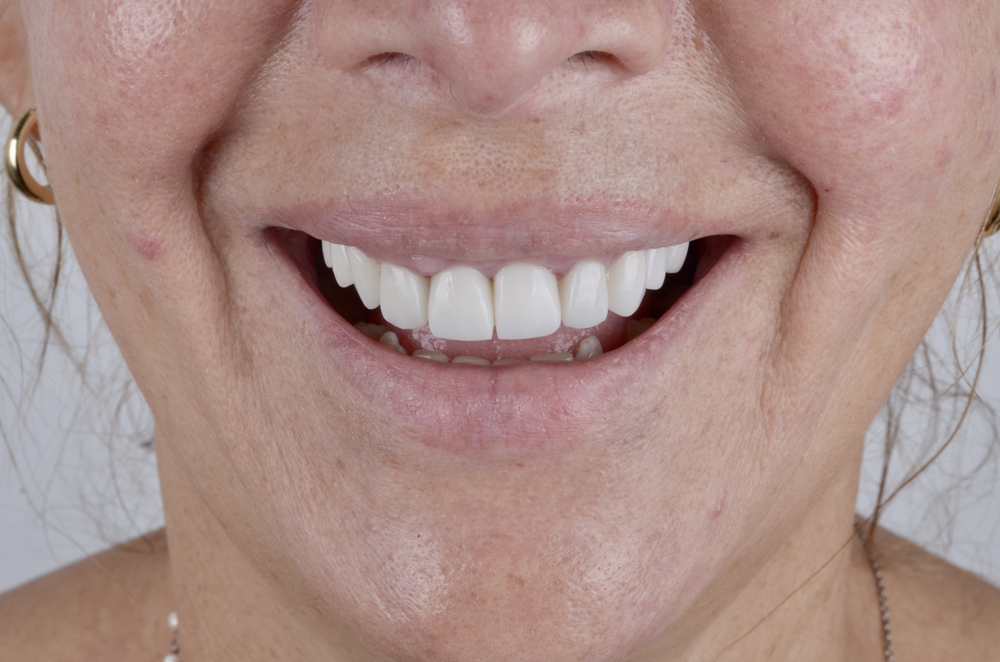
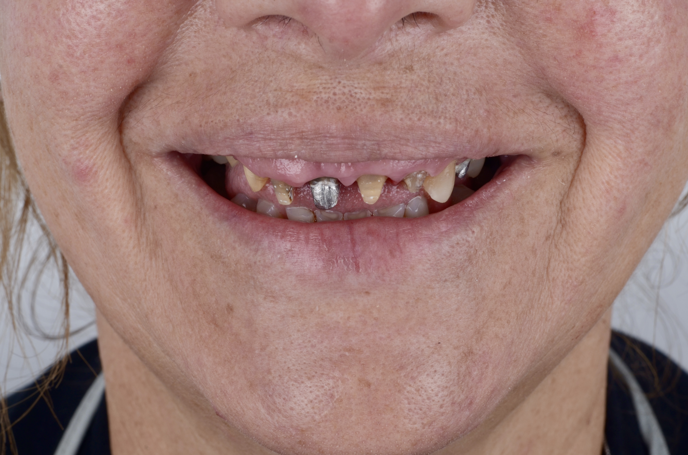
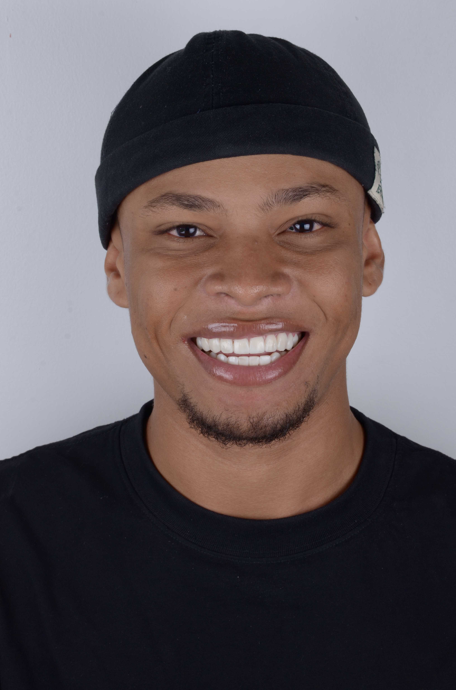
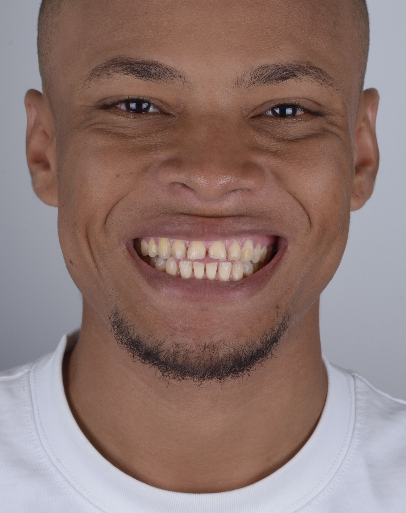
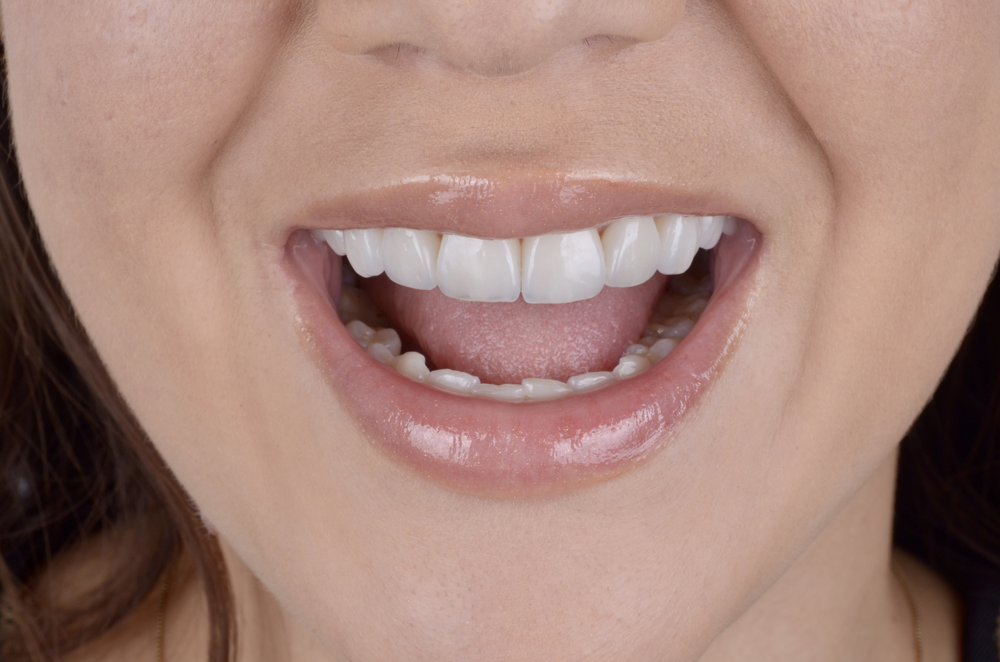

No necesitas saber nada de odontología para entender tus opciones. Aquí te lo explicamos como a un amigo.
Imagina una funda ultrafina que cubre tus dientes y los transforma al instante. Sales con tu sonrisa nueva el mismo día, sin tocar ni desgastar el diente natural.

Después Antes ← Desliza para comparar →Cerámica de altísima calidad que imita exactamente el diente natural, misma transparencia, mismo brillo, misma textura. No se nota que son carillas. Se nota que tienes una sonrisa perfecta.


Después Antes ← Desliza para comparar →El tratamiento para alinear los dientes que están torcidos, apiñados o que tienen espacios entre ellos. Corrige la posición de tus dientes poco a poco, de forma cómoda y sin que casi se note.


Después Antes ← Desliza para comparar →¿Tus dientes están más oscuros de lo que quisieras? El blanqueamiento los aclara varias tonalidades de forma segura y controlada, sin dañar el esmalte ni causar sensibilidad excesiva.


Después Antes ← Desliza para comparar →Cuando hay varios dientes dañados, perdidos o con problemas al morder, la rehabilitación oral devuelve la función y la estética de toda la boca, no solo un diente, sino todo en conjunto.

Después Antes ← Desliza para comparar →La limpieza profunda que no se puede hacer en casa. Eliminamos el sarro y la placa acumulada que el cepillo normal no alcanza, dejando tus dientes limpios, sanos y con sensación de nuevo.
Caries, diente roto, muela del juicio, dolor de muela, revisión de rutina. Todo lo que necesita tu boca en el día a día lo manejamos aquí, con la misma atención personalizada de siempre.